TEMARIO
ROBOTICA
QUE ES UN ROBOT
- Aplicaciones
- Fabricantes
- Ejes
- tipos de robot según su movimiento
- Partes del Robot: controladora - Brazo robotico o manipulador, flexpendant
ROBOTSTUDIO
ROBOT STUDIO
- Descargar robotstudio de la web
- Descargar licencia para 90 dias
- Solicitar licencia de un servidor. Archivo-> Opciones -> licencias-> "asistente"->licencias de red-> deseo especificar un servidor de licencias de red-> poner la Ip del servidor de licencias
- Retirar la licencia. Opciones -> licencias-> "asistente"->licencias de red->Deseo retira o devolver una clave de licencia flotante
- Se retira por un máximo de 90 días
- Renovación: primero hay que devolver la licencia activa o caducada y volver a solicitar y retirar
- Conectar el ordenador a la red de los alumnos, Abrir el servidor de licencias, si esta en máquina virtual (seleccionar adaptador puente,nombre:intel(R) etherner connection (14)S 1219 v modo promiscuo permitir todo, tic en cable conectado), ver dirección ip del servidor de licencias
- Descarcarga la controladoras RobotWare 6.16.01 en Robot Studio
- Abrir una estacion vacia
- Insertar Robot IRB 120
- Insertar una controladora (Observar la parte inferior se pone en verde:controladora perfectamente instalada y funcionando en automatico)
- Insertar la herramienta my tool
- Conectar la herramienta al robot (ejemplo arrastrando la herramienta al robot o mediante el menú contextual de la herramienta)
- Vistas de robot estudio
- Con el ratón
- Menú contextual sobre la estación
- Hacer visible e invisible el brazo robótico desde el menú contextual
- Mover y girar el brazo robotico
- con el ratón, seleccionado pestaña posición inicial -> mano alzada -> mover
- Desde el menu contextual del brazo robótico posición-> fijar posición
- con el ratón, seleccionado pestaña posición inicial -> mano alzada -> girar
- Desde el menu contextual del brazo robótico posición-> girar
- mover los ejes del brazo robótico con el ratón
- Mover linealmenta el brazo robotica con el ratón
- Reorientar mytool con el ratón seleccionado mytool y en la pestaña posción inicial -> mano alzada -> girar
- Mover los ejes desde el menú contextual del robot
- Mover linealmente el robot desde el menú contextual
- Roerientar la posición desde el menú contextual -> mover linealmente
- Poner los ejes del brazo robotica en su posición inicial Home: menú contextual->trasladar a posición-> Salta a posición inicial
- Servidor de licencias
CREACIÓN Y GUARDADO DE ARCHIVOS
- Creación desde estación vacia: Los archivos del proyecto se distribuyen en carpetas de robotstudio
- Creacion desde proyeccto: Los archivos quedan guardados en la carpeta proyecto
- Para exportar un proyecto de un ordenador a otro de debe de realizar desde archivo-> compartir -> un pack and go
- Para importar un proyecto de un ordenador a otro de debe de realizar desde archivo-> compartir -> un unpack and work
Crear un proyecto vs. crear una estación
En RobotStudio, hay una diferencia importante entre crear un proyecto y crear una estación:
- Crear una estación crea un archivo en robotsudio/Stations con extensión rsstn y los archivos que necesita el proyecto, rapid, archivos backup, controlador... Robotstudio los distribuye en sus carpetas
- Crear un proyecto crea un carpteta en robotstudio/projects con el nombre del proyecto donde guarda los archivos que necesita el proyecto, y el archivo principal tiene extensión rsproj. El proyecto se puede crear sin controladores y añadir el robot y luego el controlador o si seleccionamos incluir "un robot y un controlador" se abrira con estos elementos.
En versiones de robotstudio antiguas la opción se llamaba soluciones y se guardaba en la carpteta solutions,
En resumen se recominenda la opción crear un proyecto
Exportar un proyecto
Paraarchivo->compartir->pack and go
y crea una archivo con extensión rspag
para importalo a otro robotstudio
archivo->compartir->Unpack and work
Guardar un proyecto vs. Guardar una estación
En RobotStudio, hay una diferencia importante entre guardar un proyecto y guardar una estación:
- Guardar un proyecto: Cuando guardas un proyecto, estás guardando todos los archivos y configuraciones relacionados con tu trabajo en RobotStudio. Esto incluye los programas de robot, las configuraciones de herramientas, las trayectorias, los objetos 3D, y cualquier otro recurso que hayas utilizado en tu proyecto. Guardar un proyecto te permite mantener todo organizado y fácil de acceder para futuras modificaciones o revisiones.
- Guardar una estación: Guardar una estación, por otro lado, se refiere a guardar el estado actual de la simulación en RobotStudio. Esto incluye la posición y configuración de los robots, las piezas y los equipos en el entorno de simulación. Guardar una estación es útil para capturar un momento específico en tu simulación, lo que te permite volver a ese punto exacto más adelante si necesitas revisar o continuar tu trabajo desde allí.
En resumen, guardar un proyecto es más amplio y abarca todos los recursos y configuraciones de tu trabajo, mientras que guardar una estación se enfoca en el estado actual de la simulación.
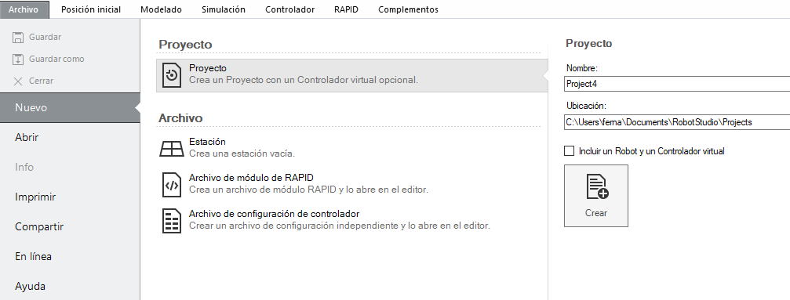
MODELADO
- Dibujar una mesa: cubo
- Cambiar origen del sistema de coordenadas del cubo. Seleccionar el objeto, aparece una nueva pestaña modificar, posiciòn -> fijar origen local
- Dibujar un vaso dos cilindros de forma que al aplicar la operación restar que una pieza con la forma de Vaso
- Aplicar comportamiento fisico a la mesa: estático
- Aplicar comportamiento físico al vado: dinámico
- Colocar el vaso elevado sobre la mesa
- Activar simulación:
- Manteneractiva desde el menú simulación-> configuración simulación -> ciclo continuo
- Mover el robot en simulación: pestaña controlador; Modo de funcionamiento-> ponerlo en manual, el contralodor pasa de ver a amarillo
- Obervamos que al activar la simulación el vaso cae sobre la mesa
- Poner comportamiento fisico al mytool cinematico,
- Tirar el vaso moviendo el brazo robótico,desde el menú contextual mediante ejes y mediante movimiento lineales
- pestaña posición inicial;importar biblioteca-> buscar biblioteca (buscar la ubicación donde se guardo el objeto)
- Copiar los objetos de proyecto anterior a la carpeta de proyecto actual, ahora accedo a los objetos, desde biblioteca del proyecto
- En ubicaciones puede ver la ruta donde se guardan la geometrias. Si guardo los objetos rslib en la carpeta de misdocumentos/robotstudio/libreries; Puedo acceder a los objetos desde biblioteca del ususario
Modificar origen local de un objeto
Al crear un cubo, le damos sus dimensiones (longitud X,anchura Y y alto Z) lo colocamos respecto al sistema de coordenas mundo, con punto de esquina y orientación. de la posición donde lo colocamos respecto de mundo va a depender el sistema de coordenadas del objeto "origen local del objeto"
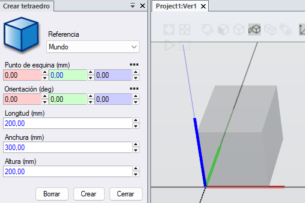El sistema de coordenadas del objeto nos va servir para para situar el objeto, como para identificar sus puntos caracteristico.
Si quiero modificar el origen del objeto, menú contextual del objecto ->modificar-> Establecer origen local

PUNTOS, TRAYECTORIAS y SIMULACIÓN
Creación de puntos
- Trasladar a posición inicial el brazo robótico
- Crear el punto de posición inicial "home": posición inicial -> programación de trayectorias- > programar posición
- Cambiar de la pestaña de diseño donde veiamos el robot, mytools, objetos modelados a la pestaña trayectorias y puntos Seleccionamos el robot -> objetos de trabajo y puntos -> wobobj0-> target 10
- desde el menú contextual del punto podemos ver y modificar su posición fijar posición
- Modificar el punto utilizando sistemas de referencia mundo
- Modificar el punto utilizando sistemas de coordenadas local ( el tcp)
- ver robot en posición en cada uno de los puntos, utilizado el menu contextual del punto -> ver robot en posicion
- Desde el menú contextual del punto-> seleccionar ver herramienta en posición
- Crear un punto, pestaña posición inicial->programación de trayectorias-> punto, Poner las coordenas x,y,z respecto el sistemas de coordenas de la estación wobj0-> añadir-> se pueden crear mas puntos-> se termina pulsar en crear. Apareceran los puntos en el wobj0
- Seleccionar un punto y pulsar en ver ver robot en posición, si el robot no puede llegar a esa posición puede ser: por que el robot no llega al punto o por la orientación
- Se puede copiar la orientación de un punto ya creado, copiar posción-> orientación relativa-> mundo.
- Modificar la orientación a mano. Menu contextual del punto->modificar posición -> fijar posición
- Se puede duplicar un punto y añadirle un offset
Ver el punto creado
Duplicar un punto moverle un offset
Desde pestaña "trayectorias y puntos" desde el menú contextual del puntos -> dupliacar punto, y le añadimos el offset
Opción PUNTO
En la pestaña posición inicial, programación y trayectorias -> crear punto
Se pone la posción del punto y la orientación del eje de coordenadas
Si no modifico la orientación y activo al opción ver herramienta en posición, veo como se coloca y el robot no puede llegar a esa posición, activO ver robot en posición y vemos que el robot no se mueve.
Ejercicio creacion de punto
Creación de un punto a mano alzada
Desde la pantalla diseño ->mano alzada-> mover y rotar.
Selecciono mytool, y muevo mytool del robot, con solo seleccionado del menú de acceso rapido AJUSTAR A OBJETOS, el robot se movera a los puntos mas significativos de la estación de una manera rapida
Para que el robot quede alineado respecto el sistema de coordenadas
desde Diseño, menú contextual del robot -> Alinear TCP
Creacción de una ruta a partir de los puntos
Ejercicio
Crea dos caminos Path 10 y path 20, despues crea un nuevo camino sin recorrido, cambialo de nombre a main, y arrastra los path a al main.
Simulación
La forma mas facil de simulación el recorrido, es desde el menú contextual del camino -> mover a largo de la trayectoria
Otra forma es desde la pantalla simulación, para eso debemos de sincorinzar con rapid, (se vera mas adelante).
Esta forma de simulación me permite grabar videos
- Pinchado sobre el IRB120 aparecen la opción modo de ejecución:
- Un solo ciclo
- Continuo
- Selecionando T_robot ( Tarea del robot): puedo seleccionar el punto de entrada: path o main
CREACION COLISIÓN Y GRABAR VIDEO
Crear una colisión
Grabación de vídeo
Se puede grabar una animación del funcionamiento en distintos formatos, exe, glb o rsstnv. Nos permite cambiar el punto vista, hacer Zoom etc sin tener Robotstudio.
Se pueden grabar vídeos en formato mp4
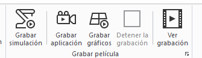
Puedo grabar una simulación, al dar play a la simulación.
Al pulsar grabar aplicación, se pone a grabar hasta que pulsemos parar
Al pulsar grabar graficos, graba los graficos hasta pulsar paro
Ocultar una trayectoria
Desde la pantalla posición inicial, en la pestaña trayectorias y puntos, vamos a una ruta creada, abrimos su menu contextual en ver-> deseleccionamos visible VER
Selección de puntos programa posición
Otra forma de selecionar puntos es moviendo el robot desde la vista de diseño "menu -> contextual del robor -> movimiento ejes del mecanismo o movimiento lineal del mecanismos" a la posición deseada y clickcar en programar posición
Esto es lento e impreciso desde robot studio, desde el robot real es una práctica muy habitual.
Hay una opción en robot studio rapida, que consiste en mover el robot a mano alzada, selecionando mover y rotar y activando las herramientas de selección colocamos el robot en la posición exacta de una forma rapida
TCP Y WORKOBJECTS
Desde modelado se dibuja una herramienta, ejemplo un cono con diametro 30 y altura 100
Desde la pestaña modelado, -> crear una herramienta.
Se pone el peso de la herramienta 100gr, se selecciona utilizar herramienta ya existente, siguiente desde el sistema de coordenadas wobj0 se selecciona el punto TCP y se la da un nombre
Crear una herramineta con dos TCP
Crear una herramienta con TCP con orientación distinta al sistema de coordenas wobj0
observar los parametros herramienta mytool, colocar en el robot en punto según un tcp u otro
Workobjects
El workobject tarea por defecto es la base del robot que coincide con el de la estación, si muevo el robot y quiero que los puntos siguan referenciados a la base de robot debo de contestar a la pregunta ¿Desea mover la base de coordenadas de la tarea? si
workobject
Vamos a crear una nueva base de coordenadas " workobject" referida a un objeto.
Si el objeto (su base de coordenadas) se mueve, los puntos referenciados a el también se mueven
Desde la pantalla posición inicial, programación de trayectorias seleccionamos otros->Crear objetos de trabajo. en la pantalla de la izquierda le podemos dar un nombre y las coordenadas de usuario
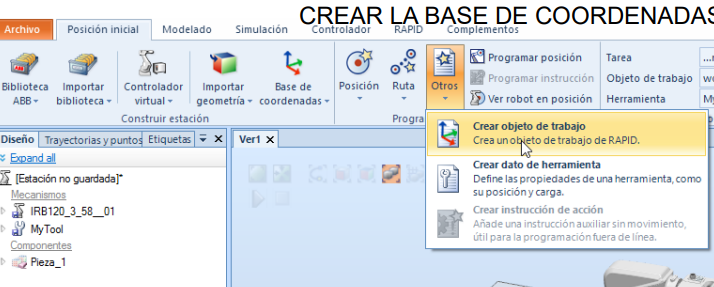 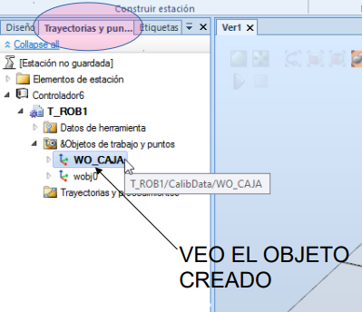
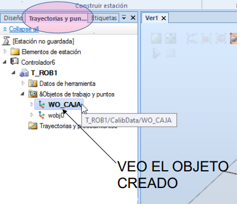
Si quiero crear los puntos repecto al nuevo sistemas de coordenadas selecciono en la pantalla posición inicial, parametros. El workobject creado
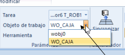Todos los puntos que estan referenciados a ese workobject, se desplazaran moviendo el workobject.
Para mover el workobject botón, accedemos al menú contextual -> fijar posción, puedo cambiar el origen y el angulo del sistema de coordenadas.
SIMULACIÓN Y RAPID
Desde el menú simulación ya hemos visto que podemos poner en marcha el robot,
La simulación ejecuta el programa RAPID, que es el programa que transferimos al robot real
En robot studio hay dos entornos de trabajo LA ESTACIÓN y RAPID
ESTACIÓN
El entorno ESTACION es entorno de ayuda para la programación del robot sin conocimientos de rapid, donde hemos visto su posibilidades, creación de objetos desde el área de modelado, creación de puntos, trayectorias, herramientas, mover el robot linealmente o por ejes,mover el robot a lo largo de una trayectoria...
RAPID
En el entorno RAPID es la creación del programa para transferirlo al robot. El programa rapid se puede crear directamente en este entorno o lo podemos crear a partir del entorno de la estación y SINCRONIZAMOS con rapid. Al hacer esta operación nos aparece en rapid el programa creado
En la pantalla rapid, en la pestaña controlador, dentro de robot podemos encontrar la opción rapid
El programa rapid esta compuesto por modulo de programa y modulo de sistema, nosotros vamos a trabajar solo con el módulo programa
En el modulo programa esta compuesto por dos archivos
Module 1
En la estructura de modulo 1 vemos primero la definición de los puntos
El proceso principal main y desde este se llama a programas secundarios
Por defecto los proceso secundarios se nombra con path pero pueden tener cualquier nombre
Sincronizar
Simulación
Desde la pantalla simulación se simula siempre el programa en RAPID, osea que si hago una modificación desde la estación y no sincronizo con rapid, me simulara el programa sin modificaciones
En la pantalla simulación, configurar ->configurar simulación
Para mejorar la simulación se puede ocultar la trayectoria creadas y activar el rastreo TCP en la pantalla simulación, monitorRastreo TCP
Ejercicio demostrativo
Creo un proyecto con un robot y caja, creo una trayectoria del home a dos vertices de la caja, creo un workobject que coincida con la base de coordenadas de la caja,creo una nueva trayectoria que vaya a los mismo vertices de la caja, creo una nueva trayectoria main, incluyo las dos trayectorias dentro de main.
Simulo el programa con seguimiento TCP
Modifico la posición de la caja y la del workobject y vuelvo a simular.
FLEXPENDANT
En la pantalla controlador, sección "herramientas del controlador" ->flexpendant -> IRC 5 flexPendant
Desplegando el menu en las tres rayas, podemos ver las 12 pantallas existentes, si hago click en una se vera en la pantalla de la flexpendant. Puedo abrir un maximo de 6 pantallas
Pantalla jogging
Desde esta pantalla puedo mover el Robot manualmente.
Pasamos el robot a manual, el modo controlado pasa de verde a amarillo
Accionamos el pulsador hombre muerto, pulsado son enable, que pasara a color verde y guard stop pasa Motors ejes 1,2 y 3
Haciendo click en motion mode puedo cambiar para
En incrementos podemos controlar la velocidad. small velocidad lenta, large velocidad rapida, none sin limitación
Pulsado en la tres rayas (encima del play stop, podemos cambiar el modo de velociada de ninguno al preseleccionado
Subiendo al siguiente pulsador podemos cambiar cambiar rapidamente a movimiento ejes, 123 y pulsando otra vez 456
La siguiente es para pasar de movimiento lineal y reorientación
GO TO podemos ir a un punto del programa
Con aling podemos alinear el TCP de la herramienta con respecto mundo
En la pantalla jogging podemos cambiar las referecncias del workobject y tool, si se han creado objetos de trabajo o TCP
Tambien podemos elegir el sistemas de coordenadas de referencia

Pantalla Configuración
Puedo cambiar el idioma del la flexpendant
Mas adelante aprenderemos a configurar la señales de entrada y salida
Configurar las 4 teclas de accion rapida superiores en la opción Progkeys
Production windows o ventana de producción
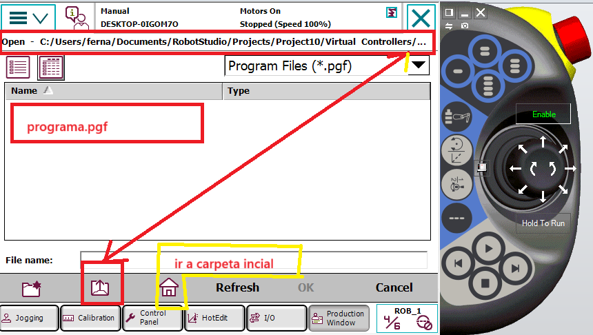Desde esta pantalla puedo cargar un programa RAPID. debo de tener una carpeta que incluya el archivo pgf, el rapid y el calib data
load program
En la parte superior donde pone open, vemos en la carpeta que nos encontramos
Pinchando en el icono flecha, subimos carpetas hasta llegar al usb
Pinchando en la carpetas nos metemos en ella
Asi navegamos por las distintas carpetas, hasta llegar al archivo donde tengo guardado el programa y pincho en el archivo pgf y cargo el programa en la controladora
Para poner el marcha programa debo de llevar el pp a main y pulso play
Con las teclas derecha e izquierda, ejecuto el programa paso a paso
Crear un tcp y un workobject con la flexpendant
Rapid
Creamos un programa en con un cubo, un workobject cubo, que va desde el punto home referenciada a workobject0 a una esquina referenciada al workobject caja y los sincronizamos con rapid
Abrimos rapid y analizamos
TEORIA
tipos de datos.
Jointtarget
instrucción wait
Módulo de entradas y salidas DSQC652
IDENTIFICAR EL MODULO DE ENTRADAS Y SALIDAS INCORPORADO EN EL irc5 y buscamos en internet dsqc652
OBSERVAMOS
Dos módulos de 8 entradas y 0V → XS12 Y XS13
Dos módulos de 8 salidas 0v y 24 v XAS14 y XS15
Fuente de alimentación 24v 0v 24V 0V XS16
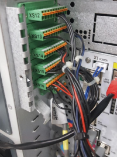****** HABILITAR EL MODULO DSQC652 DESDE LA FLEXPENDANT *******
nota: Para que aparezca la opción divice device-net se debe de tener habilitado desde el controlador, Industrial networks, diviceNet master slave
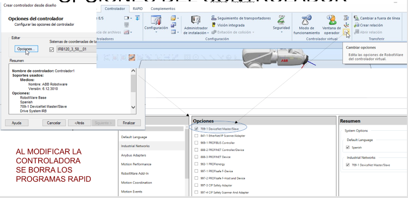
panel de control -> configuración ->devicenet device-> añadir -> usar valores de plantilla -> dsqc652 CAMBIAR ADRRES 63 por 10 -> reiniciar el controlador
en device net aparece el d652
CONFIGURAR ENTRADAS Y SALIDAS
panel de control -> configuración -> signal-> añadir -> nombre DI0; tipo de señal digital input ; asignado al dispositivo d652; device maping 0; nivel de acceso all
reiniciar el controlador
VER SEÑALES EN LA FLEXPENDANT
desde flexpendant ver entradas y salidas y fijarse en la opción entradas y salidas mas comunes, ¿como se pueden introducir entradas y salidas en esta opción?
añadir desde panel de control las ENTRADAS SALIDAS MAS COMUNES para verlas posteriormente en el menú de entradas-salidas
panel de control -> entradas y salidas-> seleccionar la E/S mas comunes -> aplicar
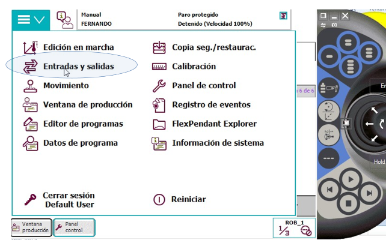

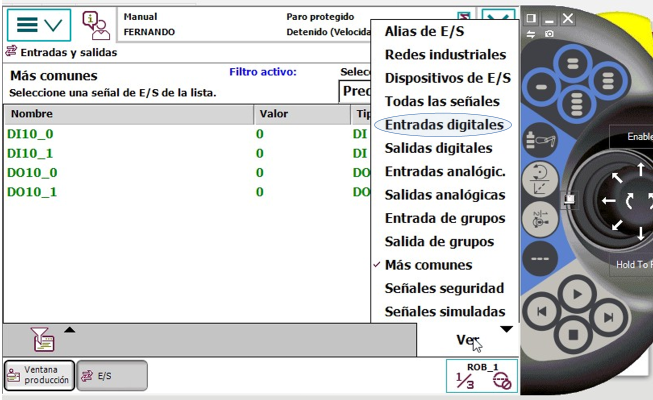
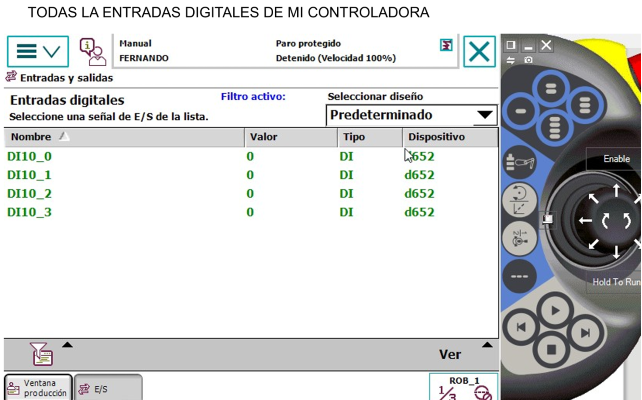
VER EL ESTADO DE LAS ENTRADAS Y SALIDAS
desde la página principal seleccionar entradas y salidas y vemos el estado de la entradas y salidas mas comunes
En ver podemos seleccionar las entradas, salidas, mas comunes …
si selección una entrada puedo simular el estado 1 o 0
en teclas programables puede generar la simulación de una entradas pag 39
panel de control→ teclas programables
****** HABILITAR EL MODULO DSQC652 DESDE ROBOTSTUDIO ******
si no incorporo Industrial networks -> 709-1 devieNet Master/Slave no aparece el menú device net device
si no lo hago la incorporación al inicio puedo hacerlo desde controlador CAMBIAR OPCIONES, después de añadir hay que reiniciar.
ahora si
desde controlador-> configuracion-> i/o System -> DeviceNet Device-> nuevo deviceNet device -> usar valores de plantilla -> seleccionar DSQ 652 cambiar adress 63 por 10
aceptar y reiniciar el controlador
añadir señales
controlador -> configuración -> i/o system -> signal-> botón derecha añadir signal ->nombre DI0; digital input; dsqc652; adress 0 … 16; nivel de acceso all
SIMULAR
Simulación -> entradas y salidas -> listas de usuario; editar listas-> nueva lista -> añadir las entradas y salidas creadas
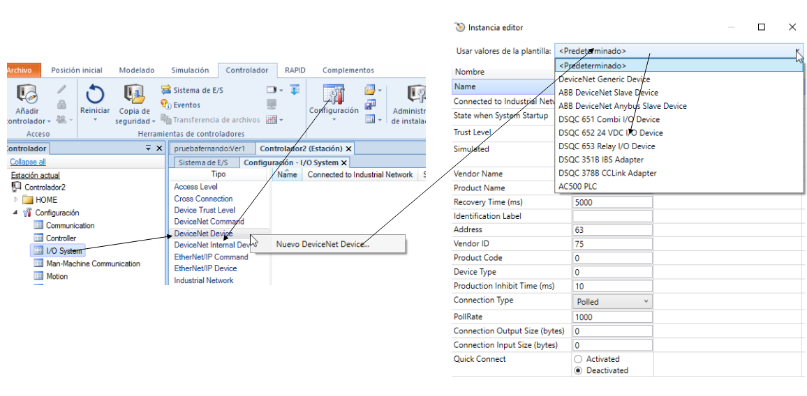
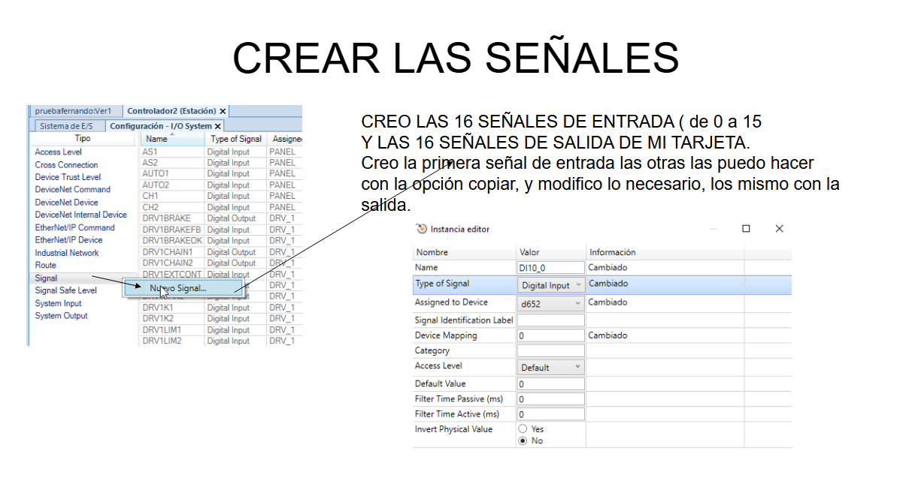
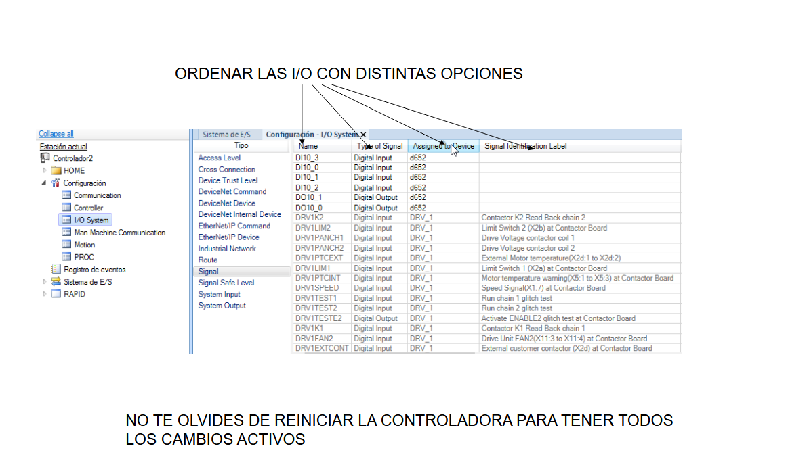


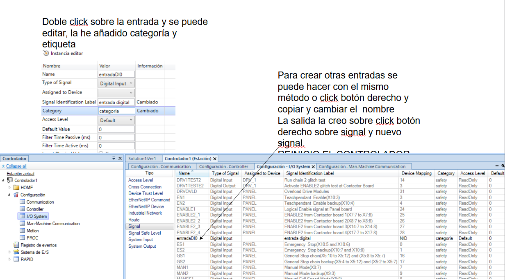
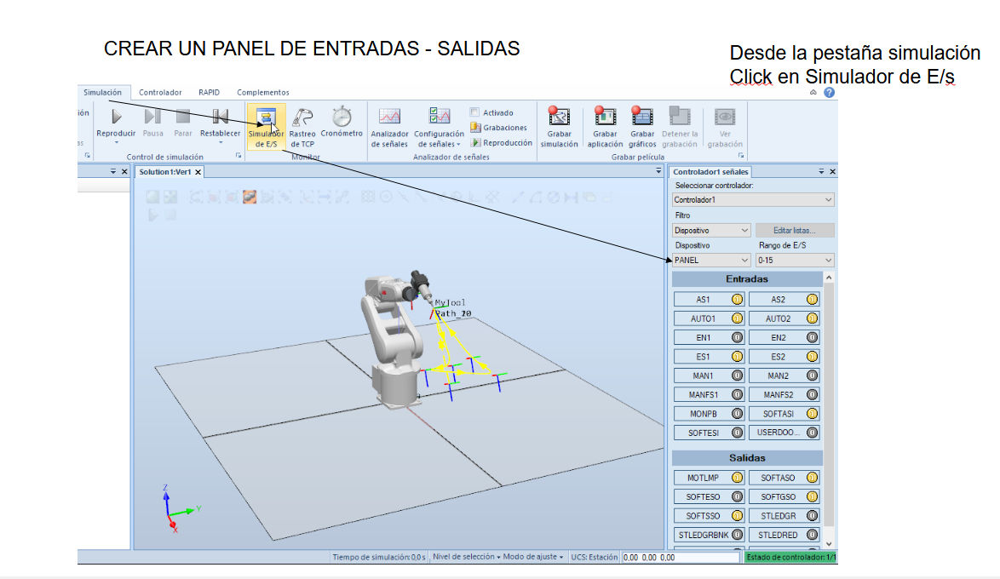
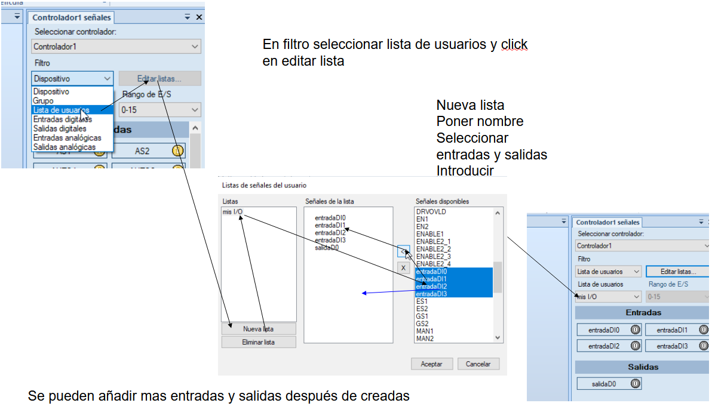
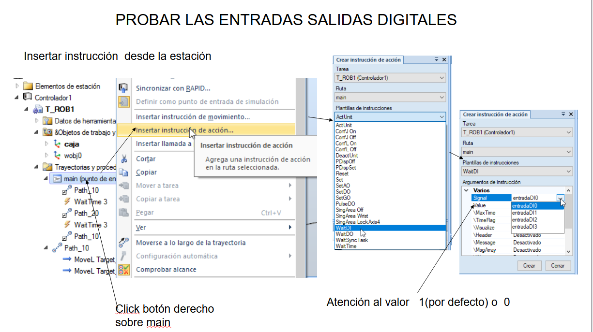

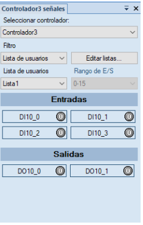
Conexión de entradas y salida y FA
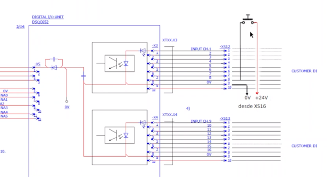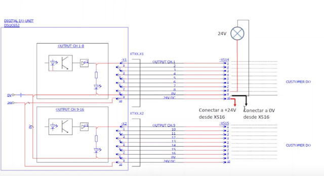
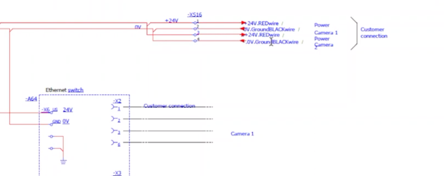
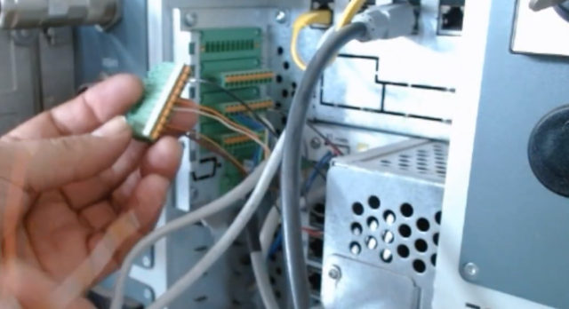


instrucciones relacionadas

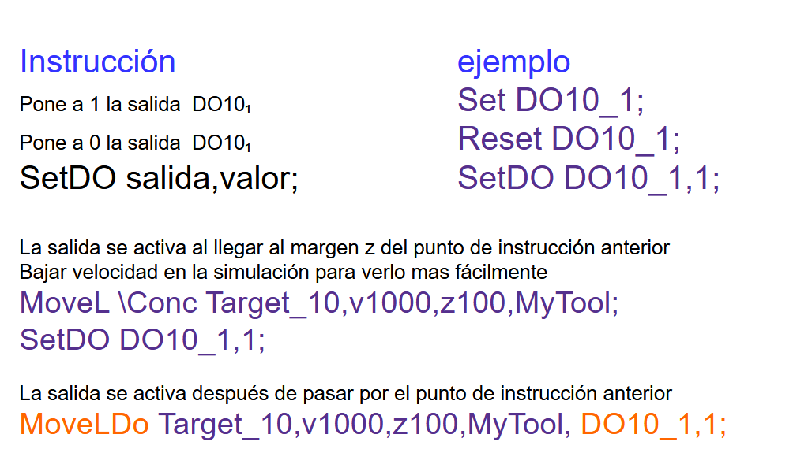
WaitDI DI0,1; espero hasta que la entrada este a 1
SetDO DO0,1; activo la salida
SetDO DO0,0; desactivo la salida
IF DI10_0=1 AND DI10_1=1 path_10;
las dos siguientes instrucciones hacen lo mismo
MoveL \Conc Target_10,v1000,z100,MyTool;
SetDO DO10_1,1;
MoveLDo Target_10,v1000,z100,MyTool, DO10_1,1;
La salida se activa después de pasar por el punto de instrucción anterior
INICIO
SMARTCOMPONENTS - COMPONENTE INTELIGENTE
SMART COMPONENTS Practica guiada
La practica consiste cambiar una caja de lugar con un brazo robótico, cuando una fotocélula detecta que hay una caja el brazo robotica la traslada a una nueva posición.
Al llegar a su posición la caja es retirada y nos quedamos a la espera de una nueva caja.
Abre la una estación e incorpora el robot y mytool, conecta mytool al robot
Crea un cubo de 400,1000,250, cambia el nombre a mesa, y comportamiento físico anclado
Desplaza la mesa a 200 -500 0
Crea un cubo 100,100,100 cambia el color a rojo, y la física del comportamiento inactivo y hazlo invisible
Desplaza el cubo a 400,400,400
Desde modelado crea un componente inteligente llamado pick and play
Arrastra la mesa y la pieza dentro dentro del componente inteligente pick and play
Edita el componente inteligente pick and play, la primera vez, se abre directamente la edición
En componer añade el componente
source, completa el cuadro con source pieza, posición 400,400,400 y selecciona transient y fisica de comportamiento dinámico
En attacher; parent ( my tool) child (source /copy)
En detacher child (source /copy)
Sink object (source /copy)
En diseño crea
una entrada con el nombre sacar y selecciona restablecimiento automático para que se comporte con un pulsador.
una entrada con el nombre borrar y selecciona restablecimiento automático para que se comporte con un pulsador.
Una entrada con el nombre coger
Una entrada con el nombre soltar
Desde diseño o desde señales y conexión une
la entrada sacar con executed de source
la entrada borrar con executed de sink
la entrada coger con executed de attacher
la entrada soltar con executed de detacher
Incorpora el controlador a la estación
añádale 3 entradas digitales y 3 salidas digitales
añádele las salidas virtuales
DO_sacarCaja
DO_borrar caja
Desde simulación crea una lógica de estación
incorpora al controlador las 5 salidas
conecta las salidas del controlador con el componente inteligente pick and play
DO_sacarCaja con SacarCaja
DO_borrar caja con borrar Caja
DO_0 con coger
DO_1 con soltar
Realiza un programa en robotStudio para el siguiente funcionamiento de la instalación:
Pulsa en la salida Virtual DO_SacarCaja
Pulsa la Entrada DI_0
El robot se pone en marcha coge la caja y la desplaza 200mm,
Una vez situada la caja, pulsa borrar y la caja desparece
y así sucesivamente
Práctica:
Mejora la práctica anterior, incorporando un fotocélula que detecte la caja automáticamente.
Crear una cinta transportadora
Abrimos Robotstudio, e importamos desde biblioteca -> conveyor-> transportador guide
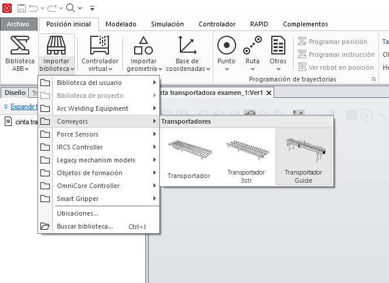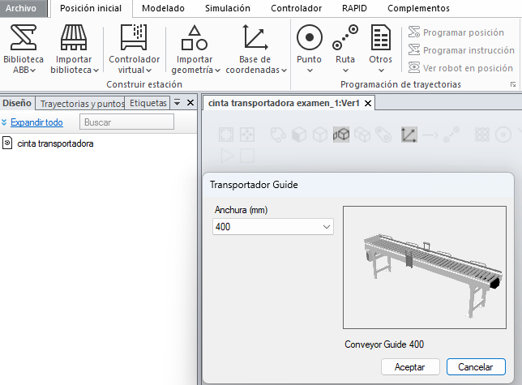
Desde la física de la cinta
- Comportamiento anclado

- Seleccionamos permitir velocidad de superfice, le damos una velocidad y una direccion (valor en eje X)
- 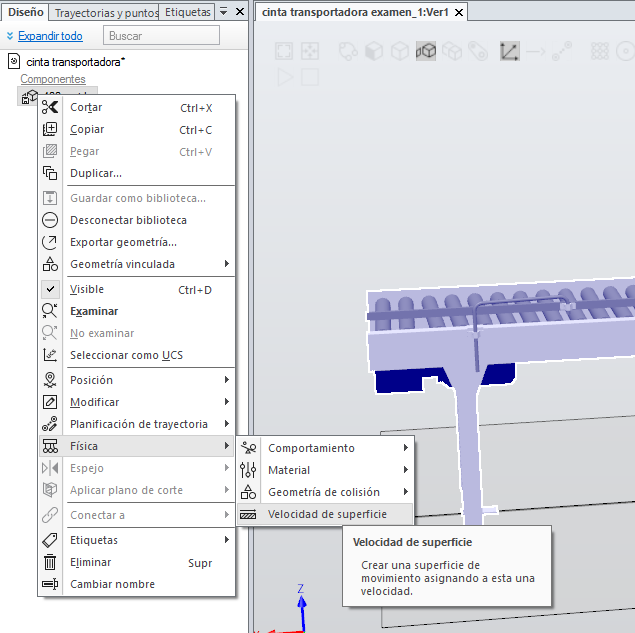
- 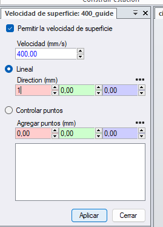
Creamos un smartcomponent, arrastramos la cinta al smartcomponent
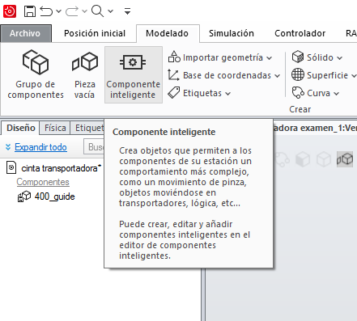Añadimos al smartcomponent el componente fisica-> physycalControl
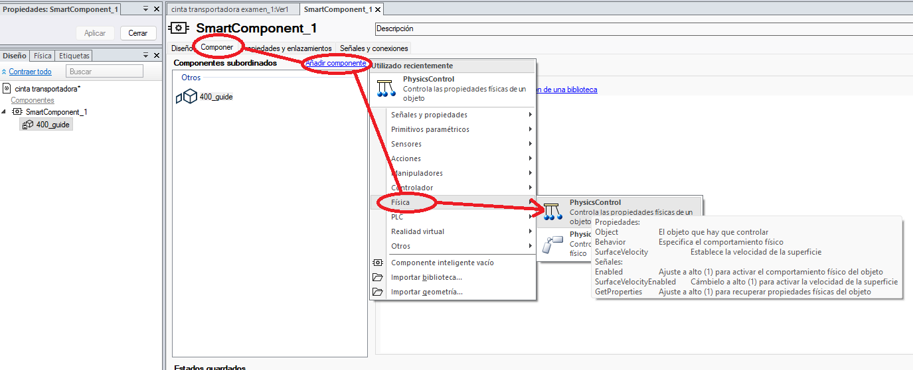A las propiedades de physical control añadimos el objeto cinta transportadora
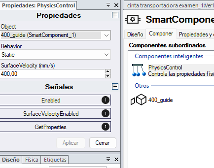Desde diseño podemos crear una entrada que nos habilite la marcha de la cinta trasportadora
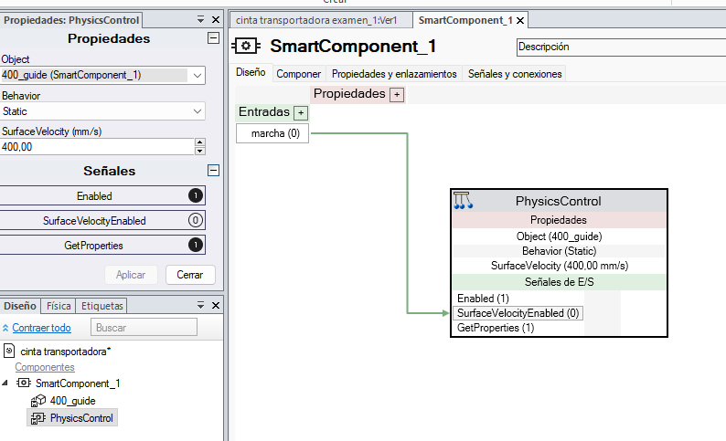Por ultimo probar el funcionamiento con un cubo de 200*200*200 con física ->comportamiento-> dinámico
QUE ES UN ROBOT
- Aplicaciones
- Fabricantes
- Ejes
- tipos de robot según su movimiento
- Partes del Robot: controladora - Brazo robotico o manipulador, flexpendant